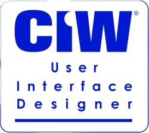
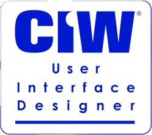

"Dear Hiring Manager,
We all know that the most gifted students are those who unveil the joy of continuous learning and be introduced to a world in which anything is possible. There is not a student that I know who displays this gift more than Davis Nguyen in the School of
Software Development. He has a remarkable ability to tackle any projects I give him. It is my belief that Mr. Nguyen is the best and most obvious choice for the currently available Software Development position.
Mr. Nguyen is passionate about software development and his passion is contagious among his peers. I have known Mr. Nguyen for the past 5 years, two of which was during the times he attended Coleman University. As a Software Development Program Chair
and a professor, I have had an opportunity to observe his participation and interaction in class and to evaluate Mr. Nguyen’s knowledge of the subject matter. His energy and the tremendous effort he put forth to clearly
communicate technical methods, best practices, theories and concepts in his projects has been exceptional. Davis Nguyen is well equipped to grow from challenges that he is presented with. He is well respected by his peers
and is always willing to help when needed. There is not a more caring, dedicated student on this campus, and the stellar evaluations of his academic achievement are all the evidence needed to prove his qualifications for
the Software Development position.
It is with great pleasure that I highly recommend my past student, Davis Nguyen, for the currently available Software Development position. I am available to discuss his prospective position at your earliest convenience. Please contact me should you wish
to discuss his abilities further."
Warm Regards,
Leticia A. Rabor
Leticia A. Rabor


 
